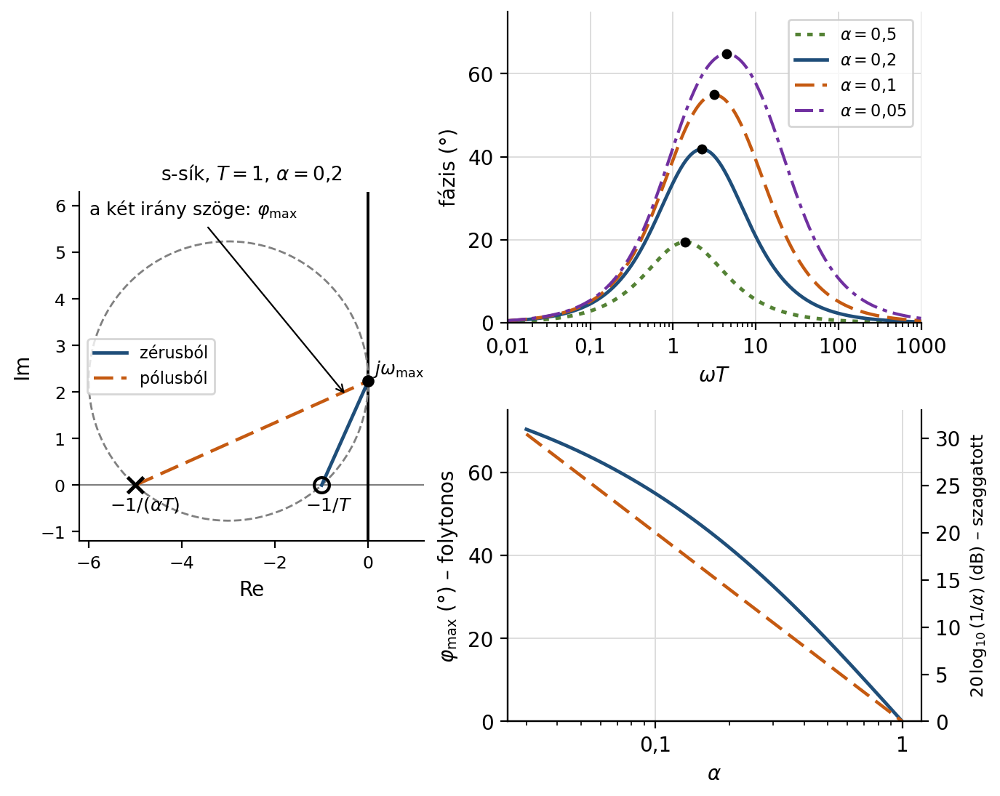
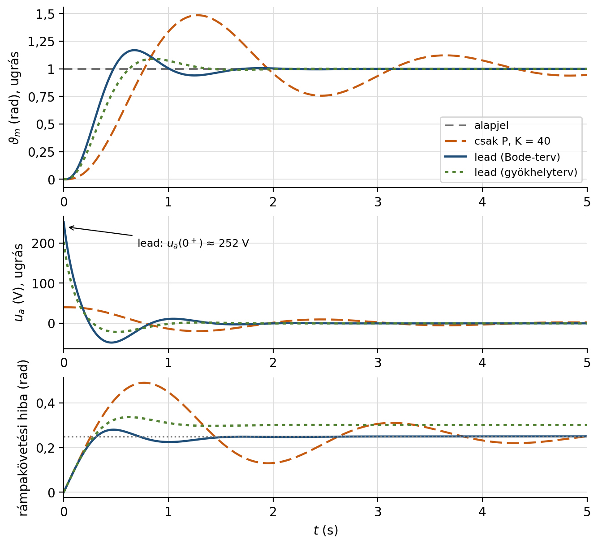

A DC-motor tengelyét kell egy előírt szögbe állítani, és követni egy
lassan forgó célt. Két előírásunk van. Egységnyi sebességű rámpa (1
rad/s) követésekor a maradó hiba legfeljebb körülbelül
rad lehet, és a kör legyen jól csillapított: a fázistartalék legalább
.
Egyetlen szám, a
,
nem tud két feltételt egyszerre teljesíteni. Olyan tag kell, amely
a pontosságot meghatározó kisfrekvenciás erősítést nem
változtatja meg, de a vágási frekvencia környékén fázist ad
hozzá. Ez a fázisemelő vagy lead
kompenzátor (lead compensator; a „lead” sietést jelent: a
kimenet fázisban megelőzi a bemenetet).
15.1.2 Szemlélet
A lead tagnak egy zérusa és egy nála távolabbi pólusa van. A zérus
már viszonylag kis frekvencián elkezdi emelni a fázist és az amplitúdót;
a pólus nagyobb frekvencián ezt visszafordítja. A kettő közötti sávban a
fázis pozitív „púpot” rajzol, az amplitúdó pedig egy lépcsőt lép
fölfelé. A feladat: a púpot a vágási frekvenciára tenni.
Mielőtt a lenti ábrát nézed, tippeld meg: ha a lead tagot egyszerűen
hozzáadjuk a
körhöz, a vágási frekvencia nő, csökken vagy marad?
Statikus változat (mint a PDF-ben)
A DC-motor hurkának Bode-diagramja csak K = 40 erősítéssel,
a lead taggal és a kettő szorzataként; a fázistartalék 25,4-ről 50,4
fokra nő
A válasz: nő. A tag a vágási frekvencia környékén
erősít is, ezért a
dB-es metszéspont jobbra csúszik,
rad/s-ról
rad/s-ra. Ez jó hír (gyorsabb kör), és egyben a tervezés fő nehézsége:
ott, ahol a vágási frekvencia végül kiköt, a folyamat fázisa már
rosszabb, mint a régi helyen volt.
15.1.3 A lead tag és a szűrt
PD
Definíció. A lead kompenzátor
átviteli függvénye
Itt
a statikus erősítés,
(másodperc) a zérus időállandója,
(dimenzió nélküli) a pólus és a zérus időállandójának aránya. A zérus
-nél,
a pólus
-nél
van; mivel
,
a zérus esik közelebb az origóhoz.
Három frekvenciatartomány látszik:
esetén
:
a kisfrekvenciás viselkedés, tehát
,
csak
-tól
függ;
esetén
:
a nagyfrekvenciás erősítés
-szorosára
nő;
a kettő között az amplitúdó
dB/dekád meredekséggel emelkedik, és a fázis pozitív.
A lead tag régi ismerős. Bontsuk fel:
Ez a Deriváló hatás, deriválószűrő és a
PID-alakok szűrt PD-szabályozója
,
és
paraméterekkel. A szűrőosztó
.
Tehát a lead tag szűrt PD, csak a frekvenciatartomány
nyelvén paraméterezve: a kis
nagy
,
azaz gyengén szűrt, erős deriválás.
15.1.4 A legnagyobb fázisemelés
levezetése
A tag fázisa a számláló és a nevező szögének különbsége:
Hol a legnagyobb? Vezessük be az
változót, és deriváljunk:
Közös nevezőre hozva a számláló:
.
Rendezve
,
és mivel
,
oszthatunk:
.
A maximum helye tehát
Ez a két töréspont,
és
mértani közepe, logaritmikus tengelyen pontosan a
felezőpontjuk.
A maximum értékéhez használjuk a szögek különbségének tangensét,
helyettesítéssel:
Derékszögű háromszögben a szemközti befogó
,
a melletti
,
az átfogó négyzete pedig
.
Ezért
Szavakkal: a fázisemelés nagyságát egyedül
szabja meg, a helyét pedig
.
A második alak a tervezés irányát követi: a szükséges fokokból számoljuk
-t.
Az amplitúdó a maximum helyén
decibelben pontosan a teljes lépcső fele. Ezt a számot a tervezésnél
azonnal felhasználjuk.

A lead tag a komplex síkon, fázisgörbék különböző α
értékekre, valamint a legnagyobb fázisemelés és a nagyfrekvenciás
erősítés α függvényében
Az ábra bal oldala ugyanezt geometriaként mutatja. Az
pontból a zérusba és a pólusba húzott szakasz által bezárt szög maga a
.
Ez a szög ott a legnagyobb, ahol a zéruson és a póluson átmenő kör
érinti a képzetes tengelyt; az érintő–szelő tétel szerint ott
egyenlő a két origótól mért távolság szorzatával,
-tel.
15.1.5 Az ára: nagyfrekvenciás
erősítés
nagyfrekvenciás növelés
dB
A fázis a
felé telítődik, az erősítés viszont korlátlanul nő. A mérési zaj
nagyrészt nagyfrekvenciás, és a szabályozón
erősítéssel jut a beavatkozó jelbe; ugyanígy az alapjelugrás első
pillanatában
(egységugrásra). A gyakorlati ökölszabály szerint egy taggal legfeljebb
–
fázist érdemes emelni, azaz
nagyjából
–
alá ne menjen (ellenőrizendő: a pontos határ forrásonként eltér, és a
zajszinttől függ).
Két lead tag sorban (röviden): ha nagy emelés kell,
felezhetjük.
egy taggal
és
-szeres
nagyfrekvenciás növelés; két
-os
taggal
tagonként, együtt csak
-szoros.
A tartalék ára tehát kisebb, a szabályozó viszont eggyel magasabb fokú.
Ha még ez sem elég, rendszerint a specifikációt vagy a beavatkozót kell
átgondolni (Alapvető korlátok).
Továbbvitt eredmény. A fázisemelés–zajerősítés
kompromisszum: a
fázisemelés ára
-szoros
nagyfrekvenciás erősítés. Ezt a csereviszonyt a Hurokformálás (loop shaping) a hurokalak
tervezésekor, az Alapvető korlátok pedig
általános törvényként viszi tovább.
15.1.6 A tervezés lépései
Adott a
folyamat, egy pontossági előírás és a kívánt
.
Erősítés a pontosságból.
-t
a hibaállandó előírásából határozzuk meg.
A kiinduló tartalék. A
hurok vágási frekvenciája és fázistartaléka:
,
.
A szükséges emelés.
,
ahol a
ráhagyás a vágási frekvencia eltolódását fedezi (első
próbára
–).
Alfa.
.
Az új vágási frekvencia. A csúcsot az új
-re
tesszük. Ott a tag amplitúdója
-szoros,
ezért
-t
a
feltételből keressük meg.
Időállandó.
.
Ellenőrzés és iteráció. Kiszámítjuk a valódi
tartalékokat; ha
kevés, növeljük
-t,
és visszamegyünk a 3. lépéshez. Végül szimulálunk, és megnézzük
-t
is.
Miért jó az 5. lépés? Mert így a fázistartalék egyetlen leolvasással
adódik:
.
15.1.7 Kézi számpélda
A motor átviteli függvénye (CTMS-értékekkel, [S-CTMS]) gyöktényezős
alakban
ezért
1. lépés.
,
ebből
esetén
().
2. lépés.
-nél
a három nevezőtényező
;
;
,
szorzatuk
,
így
.
Ez a vágási frekvencia. A fázis
,
tehát
(pontosabb
-lal
).
3. lépés, első próba
-kal:
,
,
az új vágási frekvencia
rad/s. A tényleges tartalék azonban csak
:
a folyamat fázisa
és
rad/s között
-nál
is többet romlott.
Iteráció. A ráhagyást növelve:
(rad/s)
elért
Öt fok többlet-emelés csak
tartalékot hoz, mert a többit megeszi az eltolódó vágási frekvencia.
teljesíti az előírást.
4–6. lépés a végleges értékekkel:
,
így
és
.
A
egyenletet két próbaértékből közelítjük:
-nál
,
-nél
,
tehát
.
Végül
s.
15.1.8 Az eredmény az
időtartományban és a gyökhelyes terv

Ugrásválasz, beavatkozó jel és rámpakövetési hiba
P-szabályozással, a Bode-diagramon tervezett és a gyökhelyen tervezett
lead kompenzátorral
jellemző
P,
lead (Bode)
lead (gyökhely)
(rad/s)
túllövés
(s)
(V)
(1/s)
A Tervezés a gyökhelyen terve,
,
ugyanez a szerkezet:
s,
,
.
A két módszer majdnem azonos
-t
adott, de más helyre tette a zérust és más erősítést választott. A
gyökhelyes terv a zérussal kiejti a
körüli folyamatpólust, és csillapítottabb; cserébe a
előírást nem teljesíti. A Bode-terv a pontosságot garantálja, és
gyorsabb. Egyik sem „a helyes”: a specifikáció dönti
el, melyik jobb.
Figyeld meg a feszültséget is. Egy
radiános alapjelugrás a lead tervvel
V-ot kér, ami a motornál nyilván nem áll rendelkezésre. Lineárisan,
rad ugrásra ez
V. Nagyobb ugrásnál a beavatkozó telítődik, és a valódi válasz lassabb
lesz a lineáris számításnál (Integrátortelítés és
antiwindup tárgyalja a telítés kezelését integrátoros szabályozóra;
a teljes digitális megvalósítás a záróprojektben jön). Valódi motoron a
szabályozót csak áramkorláttal, véghelyzet-kapcsolóval és
vészleállítóval szabad kipróbálni.
15.1.9 Kód
Először a levezetett képleteket ellenőrizzük sűrű
frekvenciarácson.
A design_lead függvény pontosan a fenti lépéseket végzi;
extra a ráhagyás, ha elhagyjuk, fokonként növeli, amíg a
cél teljesül.
P = models.DCMotor().tf_position()for extra in (5, 10, 15, 20, None): d = comp.design_lead(P, 40.0, 50.0, extra=extra)print(f"Δ={d.extra:4.0f}° α={d.alpha:.3f} T={d.T:.3f} ωc={d.wc:.2f} φm={d.pm:.1f}°")
Végül a három tervet mérjük össze. A zaj hatásához
rad szórású,
ms-onként új, magolt Gauss-zajt adunk a méréshez (szimulált zaj, nem
mérési adat).
t = np.linspace(0, 20, 20001)zaj = np.random.default_rng(43).normal(0.0, 0.001, t.size)tervek = [("P", TF([40], [1])), ("lead", comp.reference_lead_design().C), ("gyökhely", rlocus.reference_rlocus_design().C)]for nev, C in tervek: cl, m = closed_loop(P, C), freq.margins(C * P) info = sim.step_info(t, cl["T"].step(t), final=1.0) u_zaj = cl["CS"].lsim(zaj, t)print(f"{nev:9s} φm={m.pm:4.1f}° Ms={m.Ms:.2f} Mp={info.overshoot:4.1f}% "f"ts={info.settling_time:.2f} s u0={cl['CS'].step(t)[0]:4.0f} V "f"szórás(u)={u_zaj.std():.3f} V")
P φm=25.4° Ms=2.71 Mp=48.5% ts=6.35 s u0= 40 V szórás(u)=0.040 V
lead φm=50.4° Ms=1.71 Mp=16.9% ts=1.55 s u0= 252 V szórás(u)=0.252 V
gyökhely φm=58.7° Ms=1.47 Mp= 9.0% ts=1.25 s u0= 203 V szórás(u)=0.203 V
A zaj okozta szórás gyakorlatilag
:
a lead tag a P-szabályozónál hatszor zajosabb beavatkozó jelet ad.
15.1.10 Próbáld ki
Az interaktív ábrán
,
és
állítható; az állapotsor a tartalékokat, a túllövést és
-t
írja ki.
A kiindulás. Nyomd meg a „csak P (α = 1)” gombot:
,
túllövés
.
Ezután a „referencia lead” gombot:
és
.
Figyeld, hogy a kisfrekvenciás görbék egybeesnek: a pontosság nem
változott.
Rossz helyre tett csúcs.
esetén a csúcs
rad/s-nál van, a vágási frekvencia mégis
rad/s-ra szalad; a tartalék
lesz, rosszabb, mint lead nélkül. Miért? A tag ott már csak erősít,
fázist alig ad.
-nél
a csúcs túl magasan van:
,
lassabb a kör.
Az ár. „kis α = 0,05”: a tartalék
,
a túllövés
,
de
V. Tedd mérlegre: megéri?
Pontosság kontra stabilitás. Hagyd a referencia
-t
és
-t,
és told
-t
-ra:
a kör instabil. Nagyobb pontossághoz ez a lead tag nem elég; erről szól
a következő alfejezet.
15.1.11 Tipikus hibák
A csúcsot a régi vágási frekvenciára teszik. Tünet:
a számított tartaléknál jóval kisebb a valódi. Ok: a tag erősítése
jobbra tolja
-t,
a folyamat fázisa ott rosszabb. Javítás:
-t
az
feltételből számold, adj ráhagyást, és ellenőrizz.
„A fázisemelés ingyen van.” Tünet: a szimuláció
szép, a valódi beavatkozó rángat, melegszik, telítődik. Ok: a
nagyfrekvenciás erősítés
.
Javítás: mindig számold ki
-t
és a zaj okozta szórást; ha sok, kisebb
vagy jobb érzékelő kell.
Felcserélt zérus és pólus. Tünet: a fázistartalék
romlik. Ok: ha
,
a tag fázist süllyeszt. Javítás: lead tagnál a zérus
töréspontja kisebb frekvencián van, mint a pólusé.
Egyetlen taggal nagyon nagy emelés. Tünet:
adódik, vagy a program hibát jelez. Ok: a
a
felé csak telítődik. Javítás: két tag, kisebb erősítési igény vagy
módosított specifikáció.
A fázistartalék mint túllövés-garancia. Tünet:
mellett a vártnál nagyobb vagy kisebb a túllövés. Ok: a másodrendű kör
összefüggése csak ökölszabály; a zérus és a további pólusok is
számítanak. Javítás: szimulálj.
15.1.12 Önellenőrzés
Mit változtat a lead tagon
,
ha
rögzített?
Mekkora a tag erősítése (K-hoz viszonyítva) a legnagyobb fázisemelés
frekvenciáján?
Miért nem elég a szükséges emelést a
különbségnek venni?
Hogyan hat a lead tag a
hibaállandóra?
Melyik szabályozószerkezettel azonos a lead tag, és mi felel meg
benne
-nak?
15.1.13 Feladatok
(A) Legyen
és
s. Mekkora
,
,
a tag erősítése
-nál
és nagy frekvencián (dB-ben is,
)?
(A)
fázisemelés kell. Számítsd ki
-t
és a
értéket, amelyet az 5. lépés használ.
(B)
,
.
A
hurok fázistartaléka
(
rad/s). Tervezz lead tagot
-ra
ráhagyással, kézzel!
(B) Írd át a
referenciatervet szűrt PD alakra:
,
,
,
,
.
(C, programozós) A design_lead_at
függvénnyel tervezz a motorra
-ot
rad/s vágási frekvenciára. Írd ki
-t,
-t,
-t
és
-t.
Mit fizetsz a gyorsaságért?
(C) Miért nem teljesíthető egy lead taggal a
()
és
előíráspár? Indokold a
értékével.
15.1.14 Rövid összefoglaló
A lead kompenzátor
,
,
a szűrt PD frekvenciatartománybeli alakja. Legnagyobb fázisemelése
,
helye
,
itt az erősítése
.
Továbbvitt eredmény (tervezési eljárás):
a pontosságból,
a hiányzó tartalék plusz ráhagyás,
,
majd
az
feltételből,
,
ellenőrzés és iteráció. Továbbvitt eredmény (kompromisszum): a
fázisemelés ára
-szoros
nagyfrekvenciás erősítés, tehát zaj és nagy beavatkozó jel. A DC-motorra
adódott:
,
túllövés
.
15.1.15 Megoldások
15.1.15.1 Válaszok az önellenőrző
kérdésekre
Csak a helyét: a fázisgörbe logaritmikus tengelyen vízszintesen
eltolódik,
;
a csúcs magassága változatlan.
-szoros,
decibelben a
teljes lépcső fele.
A tag erősít is, a vágási frekvencia nagyobb lesz, és ott a folyamat
fázisa negatívabb; ezt fedezi a ráhagyás.
Sehogy:
esetén
,
így
csak
-tól
és a folyamattól függ.
A szűrt PD-vel;
,
,
.
15.1.15.2 A feladatok
megoldásai
1.
,
.
rad/s. A csúcsnál
(
dB), nagy frekvencián
(
dB).
2.
,
,
.
3.
,
,
,
.
Az
feltétele
,
azaz
.
Az
-ben
másodfokú egyenlet pozitív gyöke
,
rad/s.
s, tehát
.
Ellenőrzés:
(a kerekítés nélküli számítás
).
Teljesül.
4.
,
s,
s,
,
.
5.
for wc in (3, 4, 5, 6): d = comp.design_lead_at(P, wc, 50.0)print(f"ωc={wc} α={d.alpha:.3f} K={d.K:5.1f} K/α={d.K / d.alpha:5.0f} "f"Kv={comp.velocity_constant(d.C * P):.2f}")
Kétszeres vágási frekvencia közel kilencszeres nagyfrekvenciás
erősítést kér. Az
terv a
előírást nem teljesíti.
6.
esetén a
hurok fázistartaléka csak
,
tehát már ráhagyás nélkül
kellene, a vágási frekvencia pedig jobbra tolódva további, nagy fázist
veszít. A szükséges emelés meghaladja a
-ot
(a design_lead hibát jelez). Megoldás: két lead tag, vagy a
pontosságot más tag, a lag biztosítja (Fázissüllyesztő (lag) és lead–lag
kompenzátor).